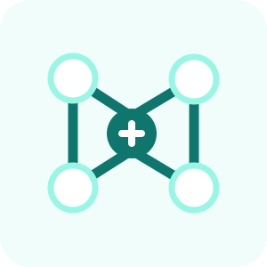

K8S CONTROL PLANE
Mixed Version Proxy graduates to Beta in v1.36
The Mixed Version Proxy now routes API requests to a peer apiserver that knows the resource version, avoiding spurious 404s during upgrades. Enabled by default in v1.36 — relevant for any fleet doing rolling control-plane upgrades.